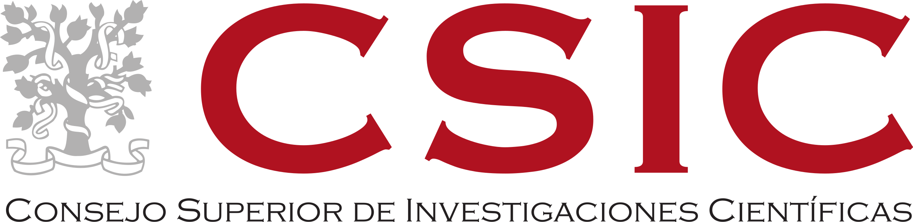
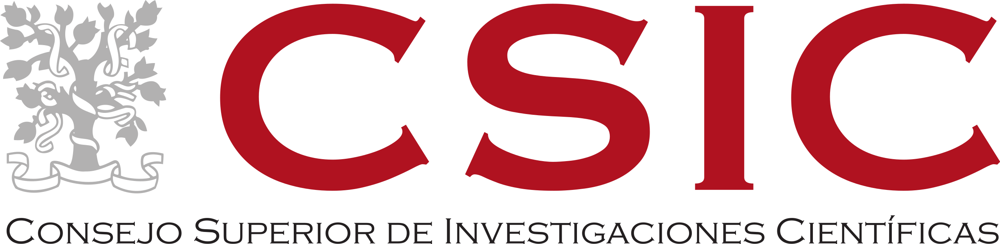

I'm a microbiologist, specialized in microbial ecology and bioinformatics. Currently, I'm workings as postdoctoral researcher in the Sustainable Agriculture and Biogeochemistry (SAB) Group of ICA-CSIC, and MINE lab graduate.
Through bioinformatic analysis of high trhoughtput sequencing I explore the microbial ecology of, mainly, human-made systems. Several biological processes that underpin our society are governed by microbial communities, whose potential could be leveraged to enhance said processes, addressing environmental challenges, and contributing to a more sustainable society.
 
